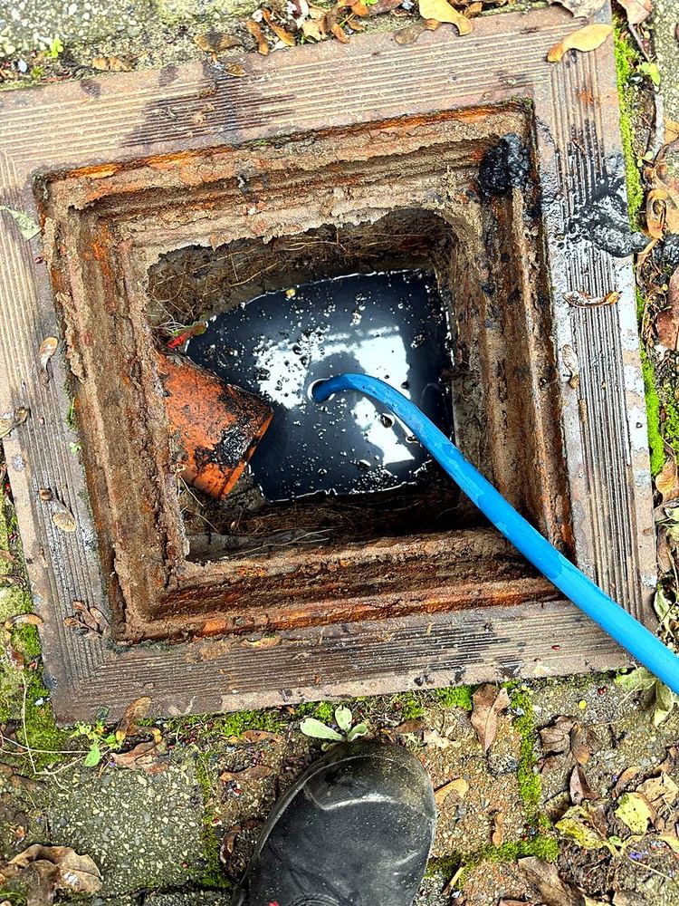

WC, évier, douche ou égout bouché à Dilbeek (1700) ? Un déboucheur arrive chez vous en moins d'une heure, souvent bien plus vite, jour et nuit, week-ends et jours fériés compris. Débouchage dès 130 € TVAC, prix annoncé avant de commencer.

Nous intervenons partout à Dilbeek, à Dilbeek, Groot-Bijgaarden, Itterbeek, Schepdaal et Sint-Martens-Bodegem. À Dilbeek, beaucoup de maisons ont un jardin, des arbres et une longue conduite d'égout jusqu'à la rue. Les racines entrent dans les vieux tuyaux, le regard dans le jardin se remplit de boue et l'eau finit par remonter dans la maison. Un curage haute pression et une inspection caméra règlent le problème durablement.
Furet électrique pour les WC, éviers et douches, hydrocureuse haute pression pour les égouts et les colonnes, et caméra d'inspection pour trouver l'origine d'un bouchon qui revient. Notre camionnette est équipée pour régler la plupart des urgences en une seule visite.
Débouchage WC · Débouchage évier · Débouchage douche · Débouchage égouts · Inspection caméra · Curage haute pression
Un débouchage simple (WC, évier, douche) commence à 130 € TVAC à Dilbeek. Le prix exact dépend du bouchon et du matériel nécessaire. Il vous est annoncé au téléphone et confirmé sur place avant de commencer.
Nous sommes chez vous en moins d'une heure, souvent bien plus vite, 24h/24 et 7j/7.
Oui : colonnes communes, égouts d'immeubles, cuisines de restaurants et commerces à Dilbeek. Facture au nom de la copropriété ou de la société.
Berchem-Sainte-Agathe · Anderlecht · Ganshoren · Asse · toutes nos communes
Appelez-nous ou laissez votre numéro, on vous rappelle tout de suite.